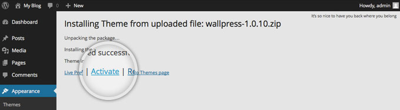
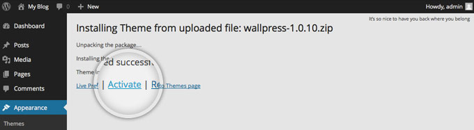
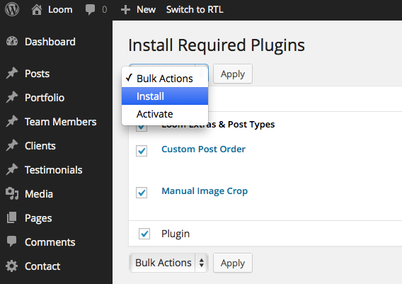
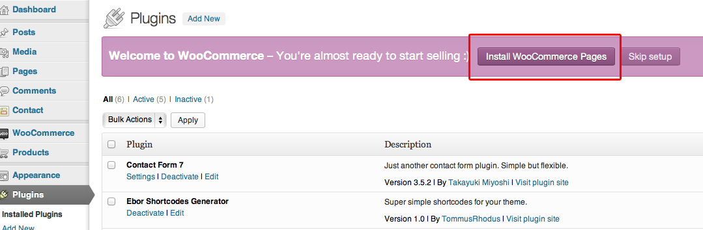

LaunchKit Videos
Heads Up!
Please watch these videos, but please also have a read through this documentation, the videos just cover demo data install :)
Uploading & Installing LaunchKit
Heads Up!
LaunchKit should install perfectly first time & every time!
If you have any issues installing your theme:
Solving Broken Theme/Stylesheet Missing WordPress Theme Issues
To install your theme in WordPress you must navigate to the menu "Appearance" on the left and then the submenu "Themes". From that page you should see your current theme "Twenty Eleven" by default OR whatever theme you currently have. Now click the "Install Themes" tab and then the text button at the top "Upload". You then should click Choose File and find your theme files on your computer and upload them. Note: You are only uploading the folder "LaunchKitWPTheme.zip" Your final step is to "Activate" your theme.
This process is shown in the images below


 

Correctly Setting Permalinks
Heads Up!
This is a required step in the theme setup, both for proper theme operation, and great SEO.
By default the pagenames will be website.com/p15 instead of website.com/about.
To fix this go to "Settings" > "Permalinks" and change to "Post Name". After choosing "Post Name", Click "Save Changes" and your done. Your urls will now display a proper Permalink structure.
Heads Up!
If you get 404 errors on any posts or pages, come back here and set your permalinks to "default", if the errors then go away it means your server has URL rewriting issues. Switch to a default theme to see the same behaviour. You should then contact your webhost support team regarding this.
Installing Theme Plugins
Heads Up!
A Number of theme features come as external plugins to make your life easier if you ever switch themes. These need installing before importing the demo data for proper theme operation.
When you first install the theme you'll see a popup on your dashboard from the theme asking you to install a number of plugins.
Allow the theme to install these for you, it will add custom post types, a page builder.
Heads Up!
Seriously, make sure these are all installed before importing demo data, you'll only cause yourself problems if you install the demo data first and do this second.
Importing Demo Data (Auto Method)
Heads Up!
If this method returns any errors, you must use the fallback demo import method (next section). This auto method can return errors depending on your server setup, 9 times out of 10 this method is perfect, remember, there is a fallback if this fails.
To use demo demo data installer go to "appearance" => "customise" from your WP Dashboard. Inside the customiser (this is also the theme options panel, you can modify loads about the theme from here) click on the "Import Demo Data" tab. Next click the "Import Demo Data" Button, a backup prompt will appear, click OK when you're ready on this, and then leave your install until you get a successful message. This process takes up to 15 mins. Do not do anything during this process!.
Developers: If you have wp_debug set to true, this process will fail, set to false whilst importing demo data.


Heads Up!
After importing the demo data, you're about 5 mins away from a perfect demo setup. Please now follow the steps in "Initial Theme Setup" for the final steps to take.
Importing Demo Data (Fallback Method)
I have created a folder labeled "Demo XML Data" which contains an export for the Live Preview. The place to upload this XML file is in WordPress under Tools > Import.
Once you've arrived on the Import page, you will click on the "WordPress" link: Wordpress - Install the WordPress importer to import posts, pages, comments, custom fields, categories, and tags from a WordPress export file.
The first time you do this you will get a pop-up prompting you to install the "WordPress Importer". You will need to click "Install Now". Then You will have installed the plugin and need to click "Activate Plugin & Run Importer".
From here you will just need click "Choose File" and select the demo-data.xml file. Then click "Upload file and import".
You will then be prompted to Assign Authors. You can read the description at the top as this explains everything. Note: Make sure you Import Attachments.
Check the box "Download and import file attachments". This will download attachments for images included in the Live Preview demo.
You now just need to wait for the importer to finish. This might take a few minutes depending on your hosting server speed.
Heads Up!
After importing the demo data, you're about 5 mins away from a perfect demo setup. Please now follow the steps in "Initial Theme Setup" for the final steps to take.
Initial Theme Setup
Heads Up!
This is a required step after importing demo data and installing require plugins. This is the final step to producing the same site as my theme demo.
From your WP Dashboard go to "settings" => "reading" and click the "static homepage" option. Let's set the "home page" to any of the "home layout" pages, and let's set the "posts page" option to "blog", once you've done this hit the save changes button. You now have a proper homepage, and a proper blog page, nice one :)
Now the last step. Go to appearance -> menus and set the theme menus in place. Use the checkboxes at the bottom of the menus to set them in location. Set the main menu into the primary location.
Troubleshooting
Heads Up!
This section covers the usual bugs that can happen with improper theme setup, read carefully if you have any issue after demo import & theme setup.
Demo data installed correctly, but there's no imges?You either forgot to import attachments when installing demo data, or your server is configured to not allow incoming attachments. You'll need to go through the theme, posts and set featured images accordingly.No Menus?! Help!This is simple, go toappearance -> menusand set your registered menus to a theme location.I'm getting 404 errors on posts & pages.See the permalinks section of this documentation.
Using the theme options
All options for the theme are found within the WordPress theme customizer, from here you can change logos, colours, loads of stuff!
When you've done making changes, be sure to click the Save Changes button to apply your modificaitons to the front end of the site.
Setting a Logo
Head to the theme options and open the header settings & logo area, use the appropriate logo controls within.
The recommended logo height for the theme is 63px, width can be anything but remember that the logo may bump into your navigation if it's width is too high.
Heads Up!
In LaunchKit you can adjust the logo size (height) in the same area that you upload your logo! Sweet!
Heads Up!
Your retina logo needs to have @2x on the end of the filename. Because of the way WordPress handles media attachments, make sure your logo filenames are truly unique so that the retina logo can be swapped properly.
Modifying Fonts & Font Colours
To modify fonts & fonts colours, you'll want to install the Easy Google Fonts plugin, it's fantastic.
Advanced: for very specific font control, you can add additional selectors to the plugin if you need to. To do this have a watch of this video:
The standard font controls provided by the plugin will cover most of the theme, you can make additional selectors in "settings" => easy google fonts.
Heads Up!
Keep your font choices as minimal as possible, the more fonts you're using, the slower your page load will be. You have been warned.
Team Posts
Heads Up!
Team posts are automatically show at /team/ on your site, though you can use the page builder to add these to a page instead.
Team posts work just like blog posts. Ensure each team post has a featured image set. You'll also want to set a job title, and some social icons for each team member using the additional inputs underneath the WP Editor/
Client Posts
Client posts are a useful way of adding some client logos to your page, set the logo as the featured image, set the client name as the title, and add a client URL if you want the logo to link somewhere.
The Page Builder
In LaunchKit we use Visual Composer as the page builder of choice, we make no modifications to the operation of the plugin, so please see the full visual composer documentation contained in the same folder of your download as this documentation.
All LaunchKit specific visual composer elements are marked as such.
WooCommerce
launchkit is ready for WooCommerce if you need eCommerce in your theme. There's 2 steps to set this up, but you should also consider installing my demo data with WooCommerce pages and posts to make your life easier after setting up the plugin.
Install WooCommerce
Go to "plugins" => "add-new" => "install" and search for WooCommerce & then run the installer.
Let WooCommerce Set Up Pages For You
Once activated, WooCommerce will offer to install required pages for you, do this now.
Install WooCommerce Demo Data
By far the easiest way to use WooCommerce is to first install the WooCommerce demo data and then configure it to your needs, you already have all the required WooCommerce pages installed so now we just need to populate them.
Head to the Demo XML Data folder in your download, the data we're after is called woocommerce.xml
For details on importing this data, head to the Installing the demo data section of this documentation.
WooCommerce is now set up
That's all you need to do to get a fully functioning shop within launchkit, with the WooCommerce pages installed and with the WooCommerce demo data installed you're ready to rock.
You may want a little more help with how to use WooCommerce though, well launchkit does not modify any of the default WooCommerce methods of working, so by far the best resource for WooCommerce now is that already written by WooThemes themselves, below is a selection of links worth visiting;
Getting Started with WooCommerceFull details of how to add and manage your product base;
Adding and managing productsHandling digital downloads;
Digital DownloadsAdding / managing coupons with your store;
CouponsFinally, if you really need some 101 help with WooCommerce, WPTuts did a great mini-series which you should take a read of;
WooCommerce 101Theme Support
Heads Up!
Please read all of the following, a link to my ticket service is provided at the end of this section.
Any ticket relating to customisation will be politely forwarded to -- http://www.madeinebor.com/customisations/ -- and then your ticket will be closed.
Before posting a ticket, please read and follow through the following article: http://www.madeinebor.com/things-check-leaving-sup...
If your ticket is about a bug or quirk, be sure to read through the following article also, as this may be covered: http://www.madeinebor.com/wordpress-known-quirks/
Please Note: If you do not follow through the steps in the article, we will simply ask you to do so and you will be delayed, most tickets are easily solved by the steps in the above article, so save some time and work with it!
Further Note: These tickets are strictly not for theme customisation or 3rd party plugin questions, if you need to modify the appearance or functionality of the theme beyond what the theme options provide, please find a freelancer or similar service. Any ticket relating to customisation will be politely forwarded to - http://www.madeinebor.com/contact/ - and then your ticket will be closed, likewise, if your ticket relates to a 3rd party plugin that the theme didn't explicitly recommend to install you will be sent to the same link.
We run support throughout the day Monday - Friday from the GMT timezone, please expect to receive a response within 12 - 48 hours during these days, tickets are not responded to on weekends or national holidays.
If you've read, accepted, and followed the steps above, click here to leave a ticket.